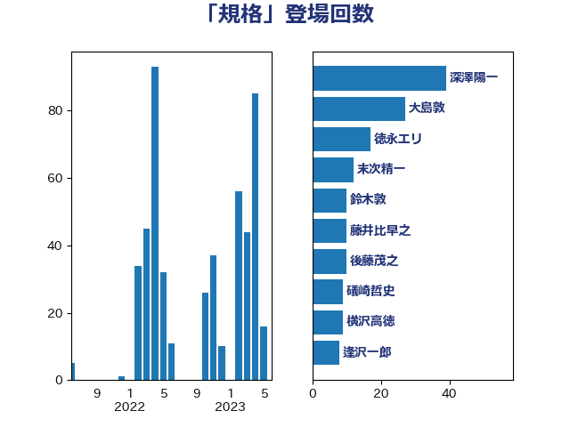

単語「規格」

| 大島敦 | 立憲民主党 | 18 回 |
| 礒崎哲史 | 国民民主党 | 18 回 |
| 野上浩太郎 | 自由民主党 | 13 回 |
| 後藤茂之 | 自由民主党 | 10 回 |
| 鈴木敦 | 国民民主党 | 10 回 |
| 横沢高徳 | 立憲民主党 | 9 回 |
| 萩生田光一 | 自由民主党 | 8 回 |
| 石井苗子 | 日本維新の会 | 7 回 |
| 下野六太 | 公明党 | 6 回 |
| 梶山弘志 | 自由民主党 | 6 回 |
| 須藤元気 | 無所属 | 6 回 |
| 古川元久 | 国民民主党 | 5 回 |
| 山本博司 | 公明党 | 5 回 |
| 若宮健嗣 | 自由民主党 | 5 回 |
| 鈴木貴子 | 自由民主党 | 5 回 |
| 阿部司 | 日本維新の会 | 5 回 |
| 吉田統彦 | 立憲民主党 | 4 回 |
| 塩田博昭 | 公明党 | 4 回 |
| 田村憲久 | 自由民主党 | 4 回 |
| 盛山正仁 | 自由民主党 | 4 回 |
| 篠原孝 | 立憲民主党 | 4 回 |
| 緑川貴士 | 立憲民主党 | 4 回 |
| 高木かおり | 日本維新の会 | 4 回 |
| 三浦信祐 | 公明党 | 3 回 |
| 勝部賢志 | 立憲民主党 | 3 回 |
| 尾崎正直 | 自由民主党 | 3 回 |
| 岩田和親 | 自由民主党 | 3 回 |
| 川田龍平 | 立憲民主党 | 3 回 |
| 斎藤アレックス | 国民民主党 | 3 回 |
| 泉田裕彦 | 自由民主党 | 3 回 |
| 菅義偉 | 自由民主党 | 3 回 |
| 井上信治 | 自由民主党 | 2 回 |
| 吉川元 | 立憲民主党 | 2 回 |
| 吉良よし子 | 日本共産党 | 2 回 |
| 大口善徳 | 公明党 | 2 回 |
| 小野田紀美 | 自由民主党 | 2 回 |
| 新妻秀規 | 公明党 | 2 回 |
| 杉田水脈 | 自由民主党 | 2 回 |
| 枝野幸男 | 立憲民主党 | 2 回 |
| 横山信一 | 公明党 | 2 回 |
| 池下卓 | 日本維新の会 | 2 回 |
| 田村まみ | 国民民主党 | 2 回 |
| 石川大我 | 立憲民主党 | 2 回 |
| 藤岡隆雄 | 立憲民主党 | 2 回 |
| 西田実仁 | 公明党 | 2 回 |
| 赤羽一嘉 | 公明党 | 2 回 |
| 中谷一馬 | 立憲民主党 | 1 回 |
| 仁木博文 | 無所属 | 1 回 |
| 住吉寛紀 | 日本維新の会 | 1 回 |
| 大家敏志 | 自由民主党 | 1 回 |
| 宮本周司 | 自由民主党 | 1 回 |
| 宮本岳志 | 日本共産党 | 1 回 |
| 小宮山泰子 | 立憲民主党 | 1 回 |
| 小沼巧 | 立憲民主党 | 1 回 |
| 山口那津男 | 公明党 | 1 回 |
| 山田太郎 | 自由民主党 | 1 回 |
| 平口洋 | 自由民主党 | 1 回 |
| 平林晃 | 公明党 | 1 回 |
| 斉藤鉄夫 | 公明党 | 1 回 |
| 斎藤洋明 | 自由民主党 | 1 回 |
| 日下正喜 | 公明党 | 1 回 |
| 末松信介 | 自由民主党 | 1 回 |
| 武田良太 | 自由民主党 | 1 回 |
| 浅川義治 | 日本維新の会 | 1 回 |
| 浅田均 | 日本維新の会 | 1 回 |
| 浜口誠 | 国民民主党 | 1 回 |
| 熊野正士 | 公明党 | 1 回 |
| 田名部匡代 | 立憲民主党 | 1 回 |
| 田村貴昭 | 日本共産党 | 1 回 |
| 石川博崇 | 公明党 | 1 回 |
| 磯崎仁彦 | 自由民主党 | 1 回 |
| 竹谷とし子 | 公明党 | 1 回 |
| 笠井亮 | 日本共産党 | 1 回 |
| 篠原豪 | 立憲民主党 | 1 回 |
| 美延映夫 | 日本維新の会 | 1 回 |
| 自見はなこ | 自由民主党 | 1 回 |
| 若松謙維 | 公明党 | 1 回 |
| 藤原崇 | 自由民主党 | 1 回 |
| 藤川政人 | 自由民主党 | 1 回 |
| 西村康稔 | 自由民主党 | 1 回 |
| 野間健 | 立憲民主党 | 1 回 |
| 長友慎治 | 国民民主党 | 1 回 |
| 長谷川岳 | 自由民主党 | 1 回 |
| 音喜多駿 | 日本維新の会 | 1 回 |
| 高鳥修一 | 自由民主党 | 1 回 |
| 鬼木誠 | 立憲民主党 | 1 回 |